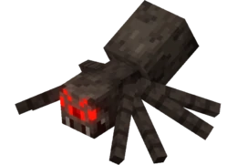

zombie
10 ❤
le zombie peut spawn avec un armure et des armes, s'il reste trop lontemps sous l'eau il se tranforme en zombie noyer qui a les meme particulariter que lui sauf qu'il vas plus vite sousl'eau
squelette
10 ❤
Le squelette a comme arme un arc, mefier vous c'est un très bon tireur

Creeper
10 ❤
le creeper met des dégats en explosant comme une tnt, s'il se fait toucher par la foudre il se charge et il met plus de dégats

araignée
8 ❤
l'airaignée n'attaque que la nuit ou quand vous la taper et elle grimpe au mur